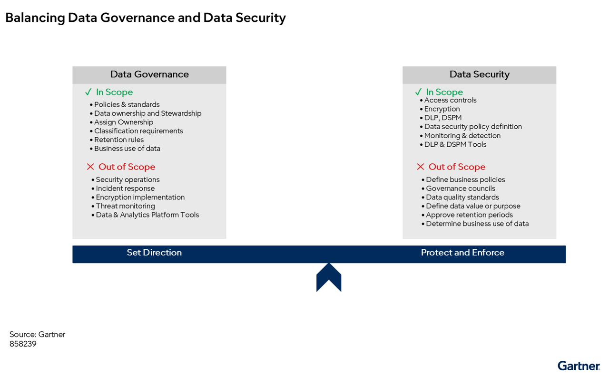

데이터 거버넌스 공백을 사이버보안 문제로 다루는 관행이 CISO 책임을 과도하게 넓히고 있다. 가트너는 데이터 의미와 활용은 사업 부문이 맡고, 보호 통제는 CISO가 맡아야 한다고 못 박았다.
핵심 요약
전략 계획 가정 Strategic Planning Assumption
2028년까지 데이터 소유와 통제 소유를 분리한 조직은 데이터 이니셔티브를 30% 더 빠르게 제공하고, 데이터 보안 사고를 20% 덜 겪을 것이다.
조직은 데이터 거버넌스의 빈틈을 사이버보안 문제로 다루는 일을 멈춰야 한다. AI와 분석 과제가 늘수록 데이터 생성, 소유, 관리, 공유에서 생긴 위험이 CISO에게 몰린다. 가트너는 보호 책임과 소유 책임을 분리한 조직이 더 빠르게 데이터 과제를 추진할 것으로 봤다. 경영진은 데이터 자산의 사업 책임자를 먼저 분명히 정해야 한다.

크게 보기Data governance sets direction through policies, ownership, classification and retention; data security protects and enforces through access controls, encryption, monitoring and detection. Clear boundaries prevent overlap while ensuring business use and data protection work together.
Data governance sets direction through policies, ownership, classification and retention; data security protects and enforces through access controls, encryption, monitoring and detection. Clear boundaries prevent overlap while ensuring business use and data protection work together.
닫기문제 맥락
원문 그대로
데이터 거버넌스 실패의 기본 책임자를 CISO로 두는 것은 중대한 실수다.
조직은 CISO를 데이터 거버넌스 실패의 희생양으로 삼지 말아야 한다. 해결되지 않은 데이터 거버넌스 실패의 기본 책임자를 CISO로 두는 것은 중대한 실수다. CISO는 분절된 데이터 소유, 불충분한 스튜어드십, 데이터 생성·보존·공유·사용의 불명확한 책임을 대신 메울 수 없고, 메워서도 안 된다. 지금 현장은 역할 혼선, 책임 공백, 규제·기술 복잡성이 겹쳐 경계가 더 흐려진 상태다.
이 대목 전문 펼치기
조직은 CISO를 데이터 거버넌스 실패의 희생양으로 삼지 말아야 한다. 해결되지 않은 데이터 거버넌스 실패의 기본 책임자를 CISO로 두는 것은 중대한 실수다.
CISO는 분절된 데이터 소유, 불충분한 스튜어드십, 데이터 생성·보존·공유·사용의 불명확한 책임을 대신 메울 수 없고, 메워서도 안 된다.
이 접근은 CISO를 실패하게 만들 뿐 아니라, 조직을 구조적 데이터 위험에 그대로 노출한다. 데이터 보안, 데이터 활용성, 규제 감시가 한데 모이며 사이버보안 리더가 일할 현장은 더 모호해졌다. 현재 상태는 세 가지 동인으로 규정된다.
역할 혼선: 경영진은 데이터 보안을 일반 데이터 거버넌스의 하위 영역으로 보는 경우가 점점 늘고 있다. 그 결과 CISO에게 데이터 품질, 계보, 스튜어드십의 운영까지 맡기려 한다. 이 업무는 전통적으로 CDAO나 IT 운영이 맡아 왔다. 실제로 사이버보안 및 데이터 보안 리더의 47%는 데이터 품질 관리와 개선을 직접 맡는다고 답했다. 56%는 데이터 보안 정책과 표준을 만들기 위해 데이터·분석 팀과 적극 협업한다고 답했다. 74%는 데이터 보안 거버넌스 정책과 표준 수립을 주도한다.
책임 공백: 조직이 AI, 분석, 디지털 전환을 서두를수록 데이터 결과에 대한 책임은 더 쪼개지고 있다. 데이터 소유자는 전사 데이터와 관련된 모든 위험을 사이버보안 팀이 맡는다고 가정하는 경우가 많다. 반면 사이버보안 리더는 데이터 생성, 품질, 보존 결정, 사업상 활용에 대한 권한이 없다. 이 불일치는 운영 마찰을 키우고 의사결정을 약하게 만든다.
규제·기술 복잡성: 확대되는 프라이버시 규제, 국경 간 데이터 요건, 제3자와의 데이터 공유 증가, 클라우드·SaaS·AI 플랫폼 확산은 민감데이터의 공격 표면과 컴플라이언스 요구를 크게 키웠다. 조직은 이에 대응한다며 CISO의 역할을 보안 통제를 넘어 데이터, 분석, AI 거버넌스로 넓히는 일이 잦다. 그 결과 역할은 더 모호해지고, 사이버위험 관리의 초점은 옅어진다.
영향
원문 그대로
CISO가 통제하지 않는 결과까지 책임지게 되면 데이터 관련 инициатив의 소유권을 두고 여러 이해관계자가 경쟁해 의사결정이 느려진다.
CISO가 통제하는 범위는 데이터 자체의 사업 결정이 아니라, 데이터 보호를 위한 사이버보안 위험과 정책, 기술·운영 통제다. 이 경계가 흐리면 CISO는 자신이 직접 통제하지 않는 결과까지 책임진다. 데이터 품질, 분류, 보존, 접근 요구를 둘러싼 결정이 늦어지고, 보안팀의 성과도 거버넌스 결과에 묶여 측정이 흔들린다. 반대로 경계를 분명히 하면 DCSAdata-centric security architecture — 애플리케이션이 달라도 데이터 중심으로 같은 보호 통제를 적용하는 보안 구조.로 일관된 통제를 깔 수 있고, 데이터 활용도 더 안전하게 뒷받침할 수 있다.
이 대목 전문 펼치기
데이터 보안에서 CISO의 통제 범위는 사업 부문이 소유한 데이터 거버넌스 결정이 아니다. CISO가 책임지는 것은 사이버보안 위험과 사이버보안 정책, 기술 통제, 운영 통제다.
CISO가 자신의 통제 범위를 정의해야 할 필요는 당장 눈앞의 과제다. 데이터 거버넌스와 데이터 보안의 책임이 뒤섞이면 조직과 운영 양쪽에서 문제가 생긴다.
CISO는 자신이 직접 통제하지 않는 결과까지 책임지게 된다. 여기에는 데이터 품질, 조직 전반의 데이터 평가·분류·관리 프로세스, 데이터 보존 결정, 사업상 접근 요구가 포함된다.
CISO의 책임을 사업 부문 소유의 데이터 거버넌스 활동까지 넓히면, 사이버위험 관리와 보안 통제 효과성에 써야 할 집중력이 약해질 수 있다.
데이터 관련 이니셔티브의 소유권을 두고 여러 이해관계자가 경쟁하면 의사결정이 느려진다. 그 결과 조직의 민첩성은 낮아지고, 혁신은 지연되며, 고객 가치 제공과 시장 경쟁력 유지가 방해를 받는다.
성공 지표가 사이버위험 감소가 아니라 거버넌스 결과에 묶이면 데이터 보안 프로그램은 측정 가능한 가치를 입증하기 더 어려워진다.
데이터 결정의 소유권과 사이버보안 통제의 소유권이 분명하지 않으면 규제 준수 활동도 쪼개질 수 있다. 그 결과 적용 범위의 빈틈이 생긴다. 누구 책임인지 가리기 어렵고, 준수 의무를 빠짐없이 평가하기도 어렵고, 규제와 법정 요구를 모두 다뤘는지 확인하기도 어렵다.
반대로 경계를 분명히 하면 전략적 기회가 생긴다. CISO는 Data Security 참조 아키텍처 브리프가 안내하는 데이터 중심 보안 구조를 채택해, 데이터 생애주기 자체를 소유하지 않고도 다양한 애플리케이션에 일관된 통제를 적용할 수 있다. 이 방식은 사이버보안 리더가 안전한 데이터 활용을 가능하게 하는 전략 파트너로 바뀌게 한다. 데이터 거버넌스와 데이터 보안 사이의 소유권 경계를 분명히 한 조직은 책임을 더 강하게 세우고, 데이터 기반 이니셔티브를 더 빨리 추진하며, 민감정보 보호를 더 잘 수행한다.
시사점
원문 그대로
CISO는 데이터 위험을 소유하지 않는다. CISO는 데이터 생애주기 전반에서 기업 데이터를 보호하는 데 따르는 사이버보안 위험을 소유한다.
데이터 거버넌스는 데이터가 어떤 사업 가치를 만드는지 정한다. 데이터 보안은 그 데이터를 무단 접근과 오남용, 변경, 손실에서 보호한다. 가트너는 CDAO가 데이터의 의미와 사용을 정하고, CISO가 법규와 사업 요구에 맞는 보호 통제를 정해야 한다고 구분했다. CISO는 생애주기 전 단계에서 보안 요구를 정의하고 집행되게 해야 하지만, 데이터 보존과 가치 판단의 최종 책임까지 맡지는 않는다.
CISO는 보안 의사결정 권한을 대체 소유자에게 위임하는 체계를 제안하고 감독해야 한다. 역할 분리를 고정하려면 공식 헌장과 RASCI업무별로 실행 책임, 최종 책임, 지원, 자문, 공유 대상을 나눠 적는 역할 매트릭스. 매트릭스를 만들어야 한다. CISO, CDAO, 프라이버시 리더, 법무, 현업이 참여하는 데이터 거버넌스 위원회도 운영해야 한다. 데이터 거버넌스 지표와 데이터 보안 지표는 따로 측정해야 한다.
이 대목 전문 펼치기
데이터 거버넌스와 데이터 보안은 서로 보완하는 영역이지만, 근본적으로 다른 문제를 푼다. 조직은 의사결정 권한이 불분명할 때 자주 충돌한다. 특히 데이터 분류 결정, 보존 요건, 접근 승인, 규제 의무의 소유권을 정할 때 그렇다. 데이터·분석 플랫폼, DLP 솔루션, DSPMdata security posture management — 데이터 저장소의 노출, 권한, 설정 상태를 점검하는 관리 도구. 도구처럼 기능이 겹치는 도구가 늘면서 이 과제는 더 어려워졌다. 이런 도구는 데이터 탐지, 분류, 접근 모니터링 같은 유사 기능을 제공하는 일이 많다. 이 기능적 수렴은 데이터 거버넌스 팀과 보안 팀의 책임선을 흐린다. 그 결과 도구 소유권, 정책 집행, 데이터 생애주기 관리 책임을 둘러싼 혼선이 생긴다.
이 상황은 비정형 데이터의 비중이 높아 더 복잡해진다. 이메일, 문서, 이미지, 채팅 로그 같은 비정형 데이터에는 일관된 메타데이터와 구조가 없는 경우가 많다. 그래서 생애주기 전반에서 어느 역할이나 팀이 거버넌스와 보안 업무를 맡는지 지정하기가 훨씬 어렵다. 명확한 책임 프레임워크와 역할 구분이 없으면, 정형·비정형 데이터가 함께 있는 환경에서 데이터 거버넌스와 데이터 보안 모두 효과가 떨어진다.
데이터 거버넌스는 정보가 어떻게 사업 가치를 만드는지 정한다. 초점은 데이터 자산의 소유권, 스튜어드십, 품질, 메타데이터, 계보, 보존, 적절한 사업상 활용에 있다. 이런 결정은 보통 사업 이해관계자가 주도하고, CDAO나 CDO 또는 이에 준하는 리더가 조정한다.
반면 데이터 보안의 초점은 무단 접근, 오남용, 변경, 손실로부터 데이터를 보호하는 데 있다. CISO는 사람, 프로세스, 기술 전반에 걸쳐 사이버위험을 관리할 통제가 존재하도록 보장할 책임이 있다.
실무에서 유용한 구분은 다음과 같다. CDAO는 데이터가 무엇을 뜻하는지와 어떻게 써야 하는지를 정한다. CISO는 법률, 규제, 컴플라이언스, 사업 요구에 맞는 데이터 보안 통제를 정의해 데이터가 어떻게 보호돼야 하는지를 정한다.
CISO는 통제를 소유한다. CDAO는 의미를 소유한다. 두 역할은 보조를 맞춰야만 성과를 낼 수 있다.
CISO의 통제 범위는 데이터 생애주기 전체에 걸친다. 그 방식은 거버넌스, 사이버위험 관리, 정책 방향 제시, 데이터 보안 관행 감독이다. 그렇다고 CISO가 모든 통제를 직접 소유하거나 운영한다는 뜻은 아니다. CISO는 적절한 사이버보안 요구를 정의하고 집행되게 해야 한다.
데이터 생성·수집 단계에서 CISO는 법률, 규제, 프라이버시, 사업 요구에 맞는 안전한 수집 요건을 정의해야 한다. security-by-design과 privacy-by-design 원칙 적용을 자문해야 한다. 사업 부문이 정한 데이터 분류와 데이터 보안 보호를 맞춰 일관된 통제가 실행되게 해야 한다.
데이터 저장 단계에서 CISO는 암호화, 키 관리, 저장 보호 요건을 정의해야 한다. 안전한 아키텍처를 검증해야 한다. 승인되지 않은 저장소와 섀도 데이터 스토어shadow data store — 승인 없이 따로 만든 데이터 저장소.를 모니터링해야 한다.
데이터 접근·사용 단계에서 CISO는 전체 데이터에 대한 접근 통제와 최소권한 통제를 구현해야 한다. 이상 접근과 무단 사용을 모니터링해야 한다. 데이터 처리와 DLP 정책을 집행해야 한다.
데이터 공유·이전 단계에서 CISO는 파트너, 공급업체, 제3자와의 데이터 교환을 보호해야 한다. API, 통합, 국경 간 이전에 따르는 데이터 보안 위험을 이해관계자에게 자문해야 한다. 데이터 이동을 보호할 모니터링과 암호화 통제를 구현해야 한다.
데이터 보관·보존 단계에서 CISO는 보관 데이터에 필요한 보안과 접근통제 요건이 정의되게 해야 한다. 보존 관행에 관한 컴플라이언스 가이드를 제공해야 한다. 다만 보존 결정의 소유자는 사업, 법무, 기록관리, 거버넌스 이해관계자라는 점을 인정해야 한다.
데이터 폐기 단계에서 CISO는 안전한 파기와 소거 요건을 수립해야 한다. 권한 있는 사업·거버넌스 이해관계자가 보존과 폐기 결정을 내린 뒤에는, 안전한 폐기 통제가 제대로 작동하는지 검증해야 한다.
모든 단계에서 CISO는 적절한 데이터 보안 통제를 수립할 책임이 있다. IT 팀은 보통 그 통제를 실행하고 유지한다. 사업 이해관계자는 사업 목적과 소유권 결정을 맡는다.
CISO는 추가 활동의 책임자가 되는 대신 다음을 해야 한다. 첫째, 의사결정을 대체 소유자에게 제안하고 위임해야 한다. 데이터 보안 거버넌스를 위해 사업 기능 전반의 의사결정 권한, 책임, 업무 소유권을 분명히 하는 위임 프레임워크를 수립하고 감독해야 한다. 기본 의사결정자가 부재하거나 이해상충이 있거나 전문성이 부족한 경우, CISO는 그 결정을 맡을 대체 소유자를 제안하고 승인할 책임이 있다.
둘째, 책임을 공식화할 RASCI 매트릭스를 만들어야 한다. 이 통제 범위를 유지하려면 공식 헌장과 RASCI 매트릭스로 역할 분리를 제도화해야 한다.
셋째, 부문 간 데이터 거버넌스 위원회를 구성해야 한다. CISO, CDAO, 프라이버시 리더, 법무팀, 사업 이해관계자가 참여하는 정례 데이터 거버넌스 운영위원회를 만들거나 참여해야 한다. 이 위원회는 책임 분쟁을 풀고 투자 우선순위를 정하는 역할을 맡는다.
넷째, 결과 지표와 ODM을 분리해 측정해야 한다. 데이터 거버넌스 지표는 데이터 품질, 완전성, 계보, 사업 가치를 봐야 한다. 데이터 보안 지표는 통제 효과성, 사이버위험 감소, 사고 빈도, 컴플라이언스 성과를 봐야 한다.
지표를 분리하면 사이버보안 팀이 자신이 소유하지 않은 결과로 평가받는 일을 막을 수 있다. 동시에 데이터 거버넌스 기능 전반의 투명성도 높아진다.
CISO는 데이터 위험을 소유하지 않는다. CISO는 데이터 생애주기 전반에서 기업 데이터를 보호하는 데 따르는 사이버보안 위험을 소유한다. 데이터 소유자는 사업 위험, 사업 결과, 데이터의 사용·보존·가치에 관한 결정의 책임을 계속 진다. 효과적인 데이터 보호에는 모든 이해관계자의 공동 책임이 필요하다.
이 구분을 조직 안에 뿌리내린 조직은 혁신 속도를 높이고, 컴플라이언스를 강화하며, 데이터 보안 사고를 실질적으로 줄일 것이다.